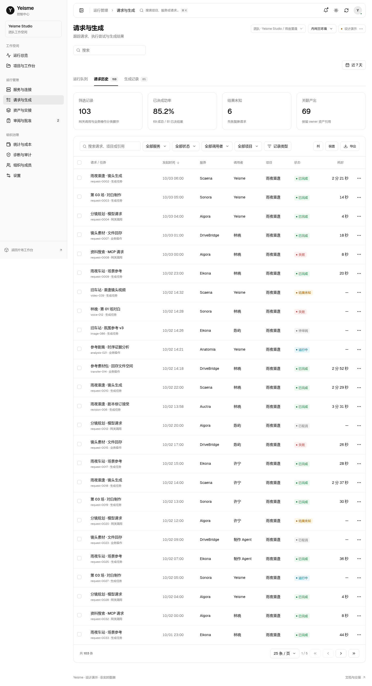
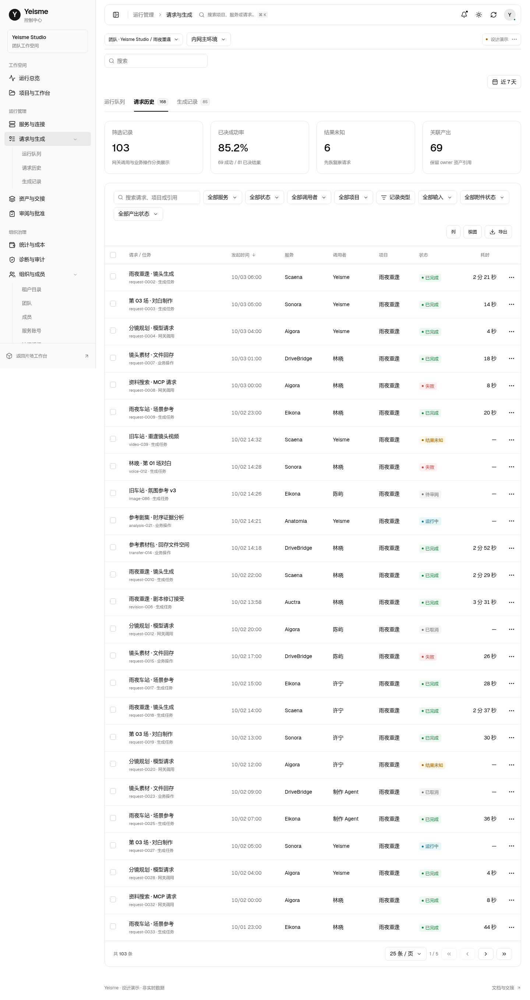
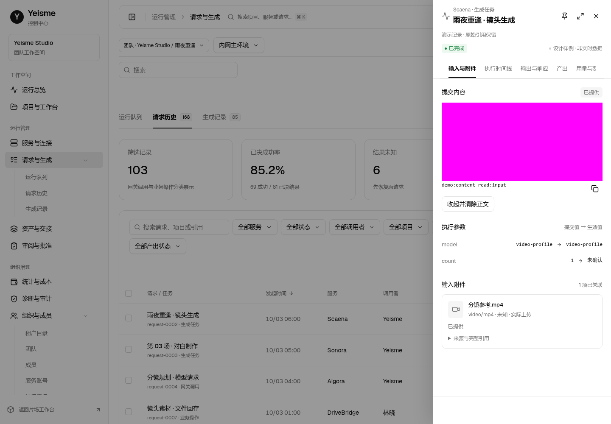
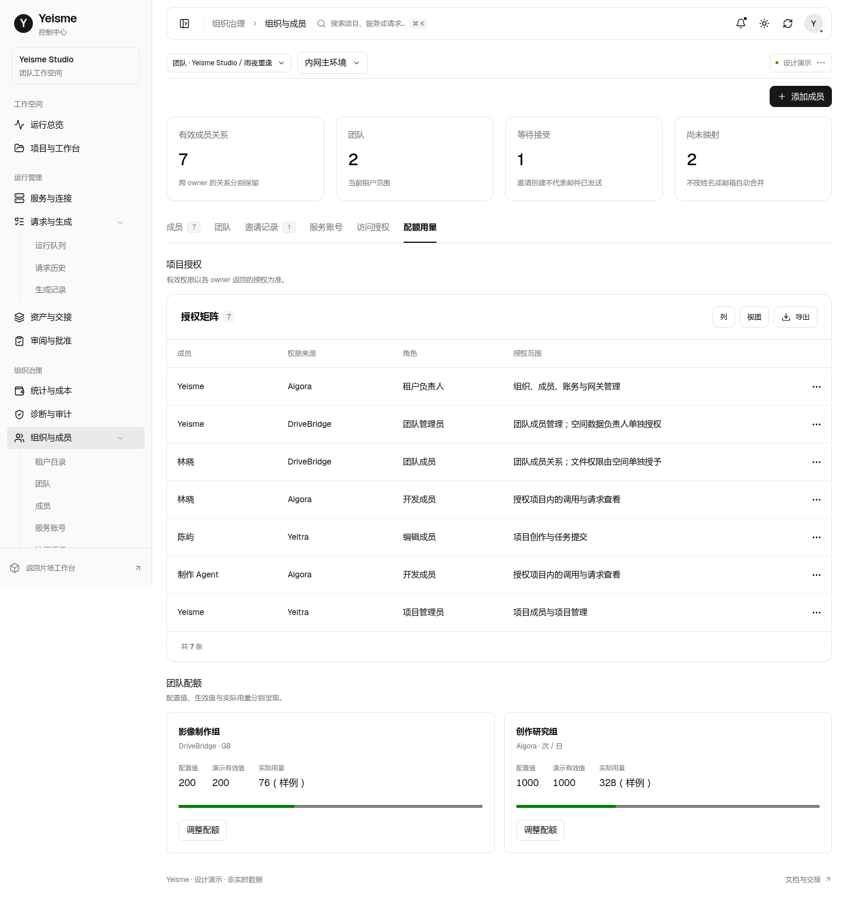

<!doctype html><html lang="zh-CN"><meta charset="utf-8"><meta name="viewport" content="width=device-width,initial-scale=1"><title>Yeisme 请求工作区设计对照</title><style>body{font:14px/1.6 system-ui;margin:0;background:#fafafa;color:#18181b}main{max-width:1500px;margin:auto;padding:32px}header{display:flex;justify-content:space-between;align-items:center;margin-bottom:24px}h1{font-size:24px}a{color:inherit}.grid{display:grid;grid-template-columns:1fr 1fr;gap:24px}figure{margin:0}figcaption{padding:12px 0;font-weight:600}img{width:100%;border:1px solid #e4e4e7;border-radius:12px;display:block}p{color:#71717a}@media(max-width:768px){.grid{grid-template-columns:1fr}main{padding:16px}}</style><main><header><div><h1>请求工作区与组织管理</h1><p>设计演示 · 同视口对照 · 所有业务数据为样例</p></div><a href="index.html#/tasks?env=main&project=rain">打开交互原型 →</a></header><div class="grid"><figure><figcaption>改造前 · AdminCN v5</figcaption></figure><figure><figcaption>改造后 · 工作区 v6</figcaption></figure><figure><figcaption>输入、附件与受控正文读取</figcaption></figure><figure><figcaption>组织授权与配额</figcaption></figure></div></main></html>